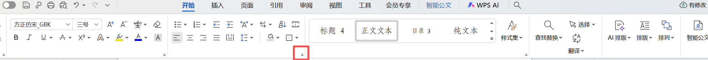
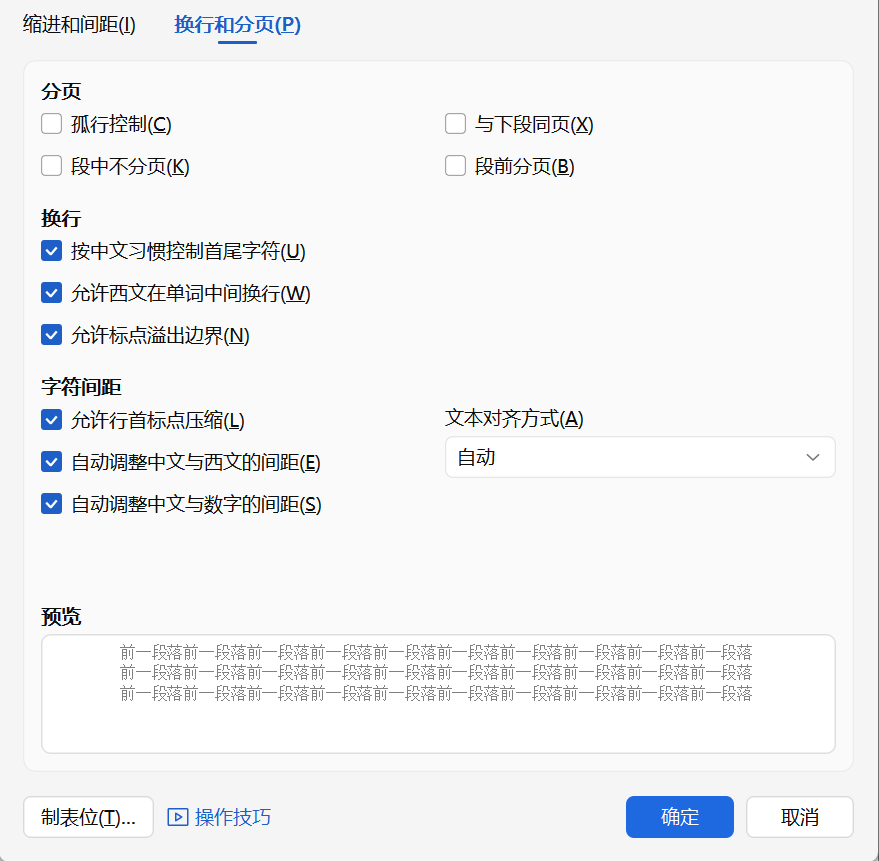

段落排版规范说明
根据GB/T 9704-2012标准，公文段落排版必须遵循以下规范：
核心要求
- 行间距：正文28磅，大标题32磅，每行28字，每页22行
- 缩进：除文件大标题和作者日期外，所有标题和段首首行缩进2字符
- 段间距：段前段后0磅，正文之前的标题与正文之间空一行（28磅）
- 分页控制：关闭孤行控制和与下段同页，允许段中分页
- 换行规则：允许西文在单词中间换行
重要术语澄清
大标题：指文件的总标题，如"关于XXX的通知"
一级/二级/三级标题：指文档内部的"一、二、三"、"(一)(二)(三)"、"1.2.3."等层级标题
本指南中"大标题"特指文件总标题，不是文档内部层级标题
正文段落设置
根据国家标准，公文正文段落必须设置为：
| 参数名称 | 标准值 | 说明 |
|---|---|---|
| 行间距 | 28磅 | 固定值28磅，确保每页22行 |
| 段前间距 | 0磅 | 段落前不额外增加间距 |
| 段后间距 | 0磅 | 段落后不额外增加间距 |
| 首行缩进 | 2字符 | 相当于4个西文字符宽度 |
| 对齐方式 | 两端对齐 | 保证左右边缘整齐 |
WPS操作步骤
1
全选文档设置正文格式
按Ctrl+A全选文档，然后在WPS文字中：
操作路径：开始 → 段落（右下角小箭头图标）
或右键点击选中的文本，选择"段落"选项。
2
设置缩进和间距
在"段落"对话框中，选择"缩进和间距"选项卡：
- 在"缩进"区域：
- 设置"特殊格式"为"首行缩进"
- 设置"磅值"为"2字符"
- 在"间距"区域：
- 设置"段前"为"0磅"
- 设置"段后"为"0磅"
- 设置"行距"为"固定值"
- 设置"设置值"为"28磅"
3
设置对齐方式
在同一个"缩进和间距"选项卡中：
- 找到"常规"区域
- 设置"对齐方式"为"两端对齐"
- 确保"大纲级别"为"正文文本"
4
单独调整不需要缩进的部分
完成全文档设置后，需要单独调整：
- 选中文件大标题（文件总标题）
- 打开段落设置，将"特殊格式"改为"（无）"
- 选中作者和日期（如有）
- 同样将"特殊格式"改为"（无）"
- 保持这些部分的段前段后为0磅
特别注意
文件大标题（文件总标题）和作者日期不需要首行缩进！
但一级标题（一、二、三）等文档内部标题需要首行缩进2字符！

段落设置界面示意图
大标题和标题行间距设置
不同层级标题的行间距要求：
| 标题类型 | 行间距 | 说明 |
|---|---|---|
| 文件大标题（总标题） | 32磅 | 文件最上方的总标题 |
| 一级标题（一、二、三） | 28磅 | 与正文相同，但需首行缩进2字符 |
| 二级标题（(一)(二)(三)） | 28磅 | 与正文相同，需首行缩进2字符 |
| 三级标题（1. 2. 3.） | 28磅 | 与正文相同，需首行缩进2字符 |
| 正文之前的标题与正文间距 | 空一行（28磅） | 在标题后按一次Enter键，形成空行 |
WPS操作步骤
1
设置文件大标题行间距
选中文件大标题（文件总标题）：
- 打开段落设置对话框
- 设置"行距"为"固定值"
- 设置"设置值"为"32磅"
- 确保"特殊格式"为"（无）"（无缩进）
- 设置"对齐方式"为"居中"
2
设置标题分行规则
当标题需要分行时（特别是大标题）：
- 在需要分行处按Shift+Enter（软回车）
- 确保分行时词义完整，不在词语中间断开
- 保持分行后排列对称、工整美观
- 避免单字成行（如"的"、"和"等单独在一行）
分行技巧： 使用Shift+Enter（软回车）而不是直接按Enter（硬回车），可以保持标题的段落统一性。
3
设置正文前空行
在正文之前的标题（通常是文件大标题）与正文之间：
- 将光标定位在标题的末尾
- 按一次Enter键
- 这将创建一个空行，行间距为28磅（与正文相同）
- 确保这个空行的段前段后间距为0磅
实际操作
只需按一次Enter键创建空行即可，WPS会自动应用前面设置的28磅行间距。
无需手动设置这个空行的具体高度。
关于作者和日期的特别说明
根据规范：对于除演讲稿、署名文章外的普通工作文件，通常不标注作者和日期。
如需标注作者和日期，请按以下要求：
1. 使用正文字体（方正仿宋_GBK三号字）
2. 按字体要求居中排布
3. 不需要首行缩进（特殊格式设置为"无"）
4. 行间距与正文相同（28磅）
分页与换行设置
公文排版中的分页和换行特殊规则：
分页换行规则
- 关闭孤行控制：允许段落首行或末行单独出现在页首或页尾
- 关闭与下段同页：允许标题和正文分页显示
- 允许段中分页：长段落可以跨页显示
- 允许西文在单词中间换行：保证行尾对齐，避免右侧留白过多
WPS操作步骤
1
全选文档设置分页规则
按Ctrl+A全选文档，打开段落设置：
操作路径：开始 → 段落 → 换行和分页选项卡
在"换行和分页"选项卡中设置：
- 取消勾选"孤行控制"复选框
- 取消勾选"与下段同页"复选框
- 勾选"段中不分页"复选框（注意：WPS中此选项为反向逻辑）
- 确保"段前分页"未勾选
注意： WPS中"段中不分页"选项的逻辑是：勾选表示"不允许段中分页"，但国标要求允许段中分页，所以我们需要勾选此选项，实际效果是允许分页。
2
设置西文换行规则
在同一个"换行和分页"选项卡中：
- 找到"换行"区域
- 勾选"允许西文在单词中间换行"复选框
- 取消勾选"按中文习惯控制首尾字符"
- 取消勾选"允许标点溢出边界"
此设置确保西文长单词可以在适当位置换行，避免行尾留白过多，保持版面整洁
3
应用并检查效果
完成所有设置后：
- 点击"确定"应用所有设置
- 滚动文档检查分页效果
- 查看西文单词的换行情况
- 使用打印预览功能（Ctrl+F2）检查整体排版
- 特别注意标题和正文的分页是否自然

换行和分页设置对话框示意图 - 显示西文换行和分页选项
常见问题与解决
问题排查
Q1
设置了28磅行距，但每页不是22行
可能原因：字体大小、页边距或页面高度设置影响
解决方法：
- 确认使用"方正仿宋_GBK三号"字体（高度约5.64mm）
- 检查页边距是否符合标准（上3.7cm，下3.5cm）
- 确认页面为A4尺寸（高29.7cm）
- 计算公式：可排版高度 = 29.7 - 3.7 - 3.5 = 22.5cm
- 28磅 ≈ 0.99cm，22.5 ÷ 0.99 ≈ 22.7行
- 实际显示22行是正常的，符合国标
Q2
西文单词被不合理地断开
可能原因：换行规则设置不当或文档中有手动换行符
解决方法：
- 确保勾选"允许西文在单词中间换行"
- 检查是否有不必要的软回车（Shift+Enter）
- 对于重要文档，可手动调整换行位置
- 或适当调整字符间距，使换行更合理
Q3
标题和正文意外分页
可能原因：分页设置或文档内容长度影响
解决方法：
- 确认已取消勾选"与下段同页"
- 如果希望特定标题和正文不分页，可单独选中这些段落
- 在"换行和分页"选项卡中勾选"与下段同页"
- 或适当调整前面段落的内容长度